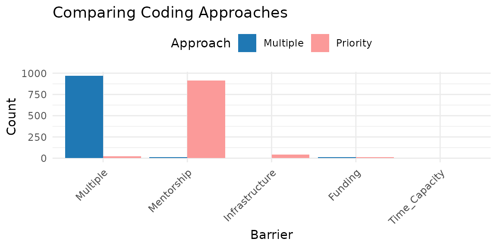
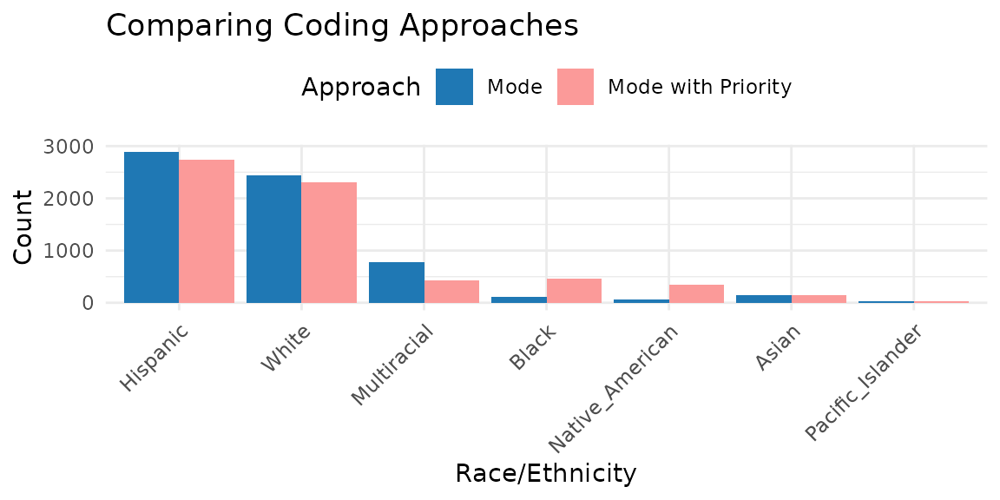

Introduction to CATAcode
Check-all-that-apply (CATA) items present numerous methodological challenges that can hinder the validity of survey research. In particular, accurately measuring, reporting, interpreting, and evaluating participants’ identities is essential.
CATAcode is an R package designed to assist researchers
in exploring CATA responses for summary descriptives and and preparing
CATA items for statistical modeling. Applying this tool to
cross-sectional and longitudinal data can help enhance the
generalizability, transparency, and reproducibility of your
research.
In surveys, a CATA item can also be structured as a series of forced
choice dichotomous items (e.g., Yes/No). For instance, for an evaluation
of their program graduate students were asked, “Have you experienced
any of these barriers to conducting research?”, with 5 options of:
lack of funding, lack of mentorship, lack of research infrastructure
(e.g., software), lack of time capacity, and other barriers. The survey
could either instruct responses to CATA or to explicitly select Yes or
No to each option. The CATAcode package is suitable for
analyzing data from both CATA and forced choice formats.
This vignette demonstrates how to use the CATAcode
package to:
- Identify participants who endorse multiple categories
- Generate tables showing every endorsement combination in the data
- Apply various strategies for merging and prioritizing categories
- Handle both cross-sectional and longitudinal data
The CATAcode Workflow
- Import & wrangle raw wider format data into longer format using the cata_prep() function.
- Explore all response combinations or category counts to understand complexity.
- Code new variables with principled strategies (multiple, priority, mode).
- Document & export metadata, tables, and optional visualizations.
1. Import and Wrangle Data
You can install the released version of CATAcode from
CRAN with:
install.packages("CATAcode")Or the development version from GitHub:
devtools::install_github("knickodem/CATAcode")Once installed, load the package:
Data Preparation
Before using the main cata_code() function, the data
must be prepared. The cata_prep() function helps reshape
your data from wider to longer format.
Requirements
Your dataset should include:
- An ID variable
- A set of variables (i.e., columns) indicating the check-all-that-apply categories to examine. All variables are expected to be dichotomous (e.g., 1/0, Yes/No, TRUE/FALSE) where the value signifying endorsement is consistent across all of the variables.
- For longitudinal data, a time variable (e.g., Wave)
Example Data
The CATAcode package includes a longitudinal dataset
comprised of CATA responses to 7 race/ethnicity identities from 6,442
students at four time points. For each identity category/column, 1 =
Selected and NA = Not selected. To load and view the first
few rows of the dataset:
data("sources_race")
head(sources_race)
#> # A tibble: 6 × 9
#> ID Wave Black Native_American Asian Hispanic Multiracial Pacific_Islander
#> <chr> <dbl> <dbl> <dbl> <dbl> <dbl> <dbl> <dbl>
#> 1 10002 1 NA NA NA 1 NA NA
#> 2 10005 1 NA NA NA 1 NA NA
#> 3 10006 1 NA NA NA 1 NA NA
#> 4 10007 1 NA NA NA 1 NA NA
#> 5 10009 1 NA NA NA 1 NA NA
#> 6 10010 1 NA NA NA NA NA NA
#> # ℹ 1 more variable: White <dbl>Let’s also create some example cross-sectional (i.e., single timepoint) data based on our earlier question to graduate students: “Have you experienced any of these barriers to conducting research?” For each category, students provide a “Yes” or “No” response.
# Creating a cross-sectional dataset (N = 1000)
set.seed(123)
n_cross = 1000
cross = data.frame(
ID = 1:n_cross,
Funding = sample(c("No", "Yes"), n_cross, replace = TRUE, prob = c(.15, .85)),
Mentorship = sample(c("No", "Yes"), n_cross, replace = TRUE, prob = c(.10, .90)),
Infrastructure = sample(c("No", "Yes"), n_cross, replace = TRUE, prob = c(.45, .55)),
Time_Capacity = sample(c("No", "Yes"), n_cross, replace = TRUE, prob = c(.25, .75)),
Other_Barrier = sample(c("No", "Yes"), n_cross, replace = TRUE, prob = c(.80, .20))
)
# Display the first few rows of the dataset
head(cross)
#> ID Funding Mentorship Infrastructure Time_Capacity Other_Barrier
#> 1 1 Yes Yes Yes Yes No
#> 2 2 Yes Yes Yes No Yes
#> 3 3 Yes Yes Yes Yes No
#> 4 4 No Yes Yes Yes Yes
#> 5 5 No Yes Yes Yes No
#> 6 6 Yes Yes No Yes NoUsing cata_prep
cata_prep() is the gateway function for every workflow
in cata_code().
Its jobs are to:
-
Reshape data from wide to tidy‑long format so the
downstream
cata_code()function can iterate over one row per person‑category (or person‑time‑category). -
Standardize column names (
id,Category,Response,time) and stores them as attributes, eliminating repetitive arguments. You tellcata_prep()which columns hold the IDs, which columns hold the categories, and how you want to name the two columns in the long format data that contain the categories and endorsed/not endorsed responses.
cata_prep() function arguments:
- data = cross
- Provide the name of the dataset. In our case cross for the cross-sectional dataset.
- id = ID
- Supply the column that uniquely identifies each respondent. Must be
unique within each time‑point if you also pass
time =. - If your ID column is named something else, e.g. “participant_id”, write id = participant_id.
- Supply the column that uniquely identifies each respondent. Must be
unique within each time‑point if you also pass
- cols = Funding:Other_Barrier
- Tell
cata_prep()which columns are the dichotomous CATA indicators. In the cross-sectional data, these are the barriers; in the longitudinal data, these are the race/ethnicity identities. - You can:
- Use the tidy‑select range syntax we show here, which grabs every
column from
FundingthroughOther_Barrier, inclusive, in the order they appear in the data frame. - List them explicitly: cols = c(Black, Native_American, Asian, White, Pacific_Islander, Hispanic, Multiracial)
- Or use a tidy‑select helper when applicable: cols = starts_with(“race_”)
- Use the tidy‑select range syntax we show here, which grabs every
column from
- Tell
- names_to = “Barriers” and values_to = “YN”
- When
cata_prep()transforms the data into long format it needs to name the resulting two columns storing the cateogry labels and participants’ responses to each category, respectively. You have the option of providing the names using thenames_toargument for the categories andvalues_toargument for the responses. By default,cata_prep()uses the names “Categories” and “Responses”, respectively.
- When
- time = Wave
- For longitudinal data, provide the column indicating the time so
cata_prep()keeps observations from different time points separate.
- For longitudinal data, provide the column indicating the time so
After this call, the new data will be a tidy long dataframe with three or four standardized columns: id, Category, Response, and time (if supplied).
# Prepare cross-sectional
datacross_prep <- cata_prep(data = cross, id = ID, cols = Funding:Other_Barrier, names_to = "Barriers", values_to = "YN")
# Prepare longitudinal
datalong_prep <- cata_prep(data = sources_race, id = ID, cols = c(Asian, Black:White), time = Wave)
# Display the first few rows of the prepared data
head(datacross_prep)
#> # A tibble: 6 × 3
#> ID Barriers YN
#> <int> <chr> <chr>
#> 1 1 Funding Yes
#> 2 1 Mentorship Yes
#> 3 1 Infrastructure Yes
#> 4 1 Time_Capacity Yes
#> 5 1 Other_Barrier No
#> 6 2 Funding Yes
head(datalong_prep)
#> # A tibble: 6 × 4
#> ID Wave Category Response
#> <chr> <dbl> <chr> <dbl>
#> 1 10002 1 Asian NA
#> 2 10002 1 Black NA
#> 3 10002 1 Native_American NA
#> 4 10002 1 Hispanic 1
#> 5 10002 1 Multiracial NA
#> 6 10002 1 Pacific_Islander NA2. Explore All Response Combinations
The first step when analyzing CATA data is exploring all combinations
of categories present in the data. The cata_code() function
with approach = "all" helps identify every unique category
combination. For longitudinal data, approach = "counts"
provides a summary of how many times each participant endorsed each
category across time.
cata_code() function arguments:
- data = datacross_prep (or datalong_prep)
- The tidy‑long format dataframe returned by
cata_prep().
- The tidy‑long format dataframe returned by
- id = ID
- Column that uniquely identifies each respondent. Must match the
idwe specified incata_prep(), which wasIDfor both the cross-sectional and longitudinal datasets.
- Column that uniquely identifies each respondent. Must match the
- categ = Barriers
- The column that stores the category labels. For the cross-sectional
data, we named this column “Barriers” in
cata_prep(). For the longitudinal data, we relied on thecata_prep()default name of “Category”.
- The column that stores the category labels. For the cross-sectional
data, we named this column “Barriers” in
- resp = YN
- The column that stores the response codes (e.g., Yes/No). For the
cross-sectional data, we named this column “YN” in
cata_prep(). For the longitudinal data, we relied on thecata_prep()default name of “Response”.
- The column that stores the response codes (e.g., Yes/No). For the
cross-sectional data, we named this column “YN” in
- approach = “all”
- “all” will return every unique combination of endorsed categories for each person‑wave. Useful for an initial scan of response complexity.
- “counts” is only for longitudinal data, which we show below, and returns a count table of how many times each participant endorsed each category across time points.
- We will discuss the other options of “multiple”, “priority”, and “mode” in a moment.
- endorse = “Yes”
- The value in
respindicating endorsement of the category. For the cross-sectional data, the value is “Yes”; in the longitudinal data, the value is 1.
- The value in
- new.name = (optional)
- Name for the newly created variable when
approach= “all”, “multiple”, “priority”, or “mode”. For “counts” a wide participant‑level dat frame is returned, sonew.nameis ignored.
- Name for the newly created variable when
- sep = “-”
- Only used for
approach = "all"to separate each endorsed category when they are combined into a single variable.
- Only used for
Explore all combinations in cross-sectional data
# Explore all combinations in cross-sectional data
cross_all <- cata_code(data = datacross_prep,
id = ID,
categ = Barriers,
resp = YN,
approach = "all",
endorse = "Yes",
new.name = "Combinations",
sep = "-")
# Display the result
head(cross_all)
#> # A tibble: 6 × 2
#> ID Combinations
#> <int> <chr>
#> 1 1 Funding-Mentorship-Infrastructure-Time_Capacity
#> 2 2 Funding-Mentorship-Infrastructure-Other_Barrier
#> 3 3 Funding-Mentorship-Infrastructure-Time_Capacity
#> 4 4 Mentorship-Infrastructure-Time_Capacity-Other_Barrier
#> 5 5 Mentorship-Infrastructure-Time_Capacity
#> 6 6 Funding-Mentorship-Time_Capacity
#
# Count the frequency of each combination
table(cross_all$Combinations)
#>
#> Funding
#> 12
#> Funding-Infrastructure
#> 11
#> Funding-Infrastructure-Other_Barrier
#> 1
#> Funding-Infrastructure-Time_Capacity
#> 18
#> Funding-Infrastructure-Time_Capacity-Other_Barrier
#> 5
#> Funding-Mentorship
#> 72
#> Funding-Mentorship-Infrastructure
#> 97
#> Funding-Mentorship-Infrastructure-Other_Barrier
#> 27
#> Funding-Mentorship-Infrastructure-Time_Capacity
#> 259
#> Funding-Mentorship-Infrastructure-Time_Capacity-Other_Barrier
#> 57
#> Funding-Mentorship-Other_Barrier
#> 7
#> Funding-Mentorship-Time_Capacity
#> 213
#> Funding-Mentorship-Time_Capacity-Other_Barrier
#> 51
#> Funding-Other_Barrier
#> 1
#> Funding-Time_Capacity
#> 20
#> Funding-Time_Capacity-Other_Barrier
#> 2
#> Infrastructure
#> 3
#> Infrastructure-Other_Barrier
#> 1
#> Infrastructure-Time_Capacity
#> 5
#> Mentorship
#> 12
#> Mentorship-Infrastructure
#> 13
#> Mentorship-Infrastructure-Other_Barrier
#> 5
#> Mentorship-Infrastructure-Time_Capacity
#> 34
#> Mentorship-Infrastructure-Time_Capacity-Other_Barrier
#> 6
#> Mentorship-Time_Capacity
#> 53
#> Mentorship-Time_Capacity-Other_Barrier
#> 9
#> Time_Capacity
#> 4
#> Time_Capacity-Other_Barrier
#> 1Explore endorsement counts over time in longitudinal data
# Explore all combinations in cross-sectional data
# Get counts across waves
long_counts <- cata_code(data = datalong_prep,
id = ID,
categ = Category,
resp = Response,
approach = "counts",
endorse = 1)
# Display the result
head(long_counts)
#> # A tibble: 6 × 3
#> # Groups: ID [5]
#> ID Category n_time
#> <chr> <chr> <int>
#> 1 100003 White 4
#> 2 100006 White 1
#> 3 100009 Asian 1
#> 4 100010 White 2
#> 5 100011 Native_American 2
#> 6 100011 White 13. Coding A New Variable for Statistical Analysis
CATAcode offers several approaches with the
cata_code() function to prepare CATA data for statistical
modeling:
- “multiple” - combine anyone endorsing ≥ 2 categories into a single catch‑all group (e.g., “Multiracial”).
- “priority” - assign a participant to the first category in a user‑supplied priority list that they endorsed.
- “mode” - longitudinal only; assign the category endorsed most often across waves (ties are handled like “multiple” or decided by priority if supplied).
The “multiple” Approach
The “multiple” approach automatically combines individuals who have reported two or more categories into the same group.
A new argument to name the new category:
- multi.name = “Multiple”
- What to call the catch‑all group of people who checked 2+ boxes.
# Apply the "multiple" approach
cross_multiple <- cata_code(data = datacross_prep,
id = ID,
categ = Barriers,
resp = YN,
approach = "multiple",
endorse = "Yes",
new.name = "Barrier",
multi.name = "Multiple")
# Display the results
table(cross_multiple$Barrier)
#>
#> Funding Infrastructure Mentorship Multiple Time_Capacity
#> 12 3 12 968 4The “priority” Approach
In our example the vast majority of students selected two or more categories and were combined into the Multiple category. Although this informs the graduate program that most students experience multiple barriers to conducting research, it provides little information for actionable changes. In contrast, the “priority” approach allows us to prioritize specific categories of interest. For instance, the graduate program might have a particular interest improving mentorship of graduate researchers and investing in research infrastructure.
A new argument to list the priority categories:
- priority = c(“Mentorship”, “Infrastructure”)
- Vector of category labels in descending priority
order. A participant is assigned to the first category in this
list that they endorsed. If they endorsed none of the priority
categories, they fall back to their single selection (or
multi.nameif they endorsed > 1 non‑priority category).
- Vector of category labels in descending priority
order. A participant is assigned to the first category in this
list that they endorsed. If they endorsed none of the priority
categories, they fall back to their single selection (or
# Apply the "priority" approach
cross_priority <- cata_code(data = datacross_prep,
id = ID,
categ = Barriers,
resp = YN,
approach = "priority",
endorse = "Yes",
new.name = "Barrier",
multi.name = "Multiple",
priority = c("Mentorship", "Infrastructure"))
# Display the results
table(cross_priority$Barrier)
#>
#> Funding Infrastructure Mentorship Multiple Time_Capacity
#> 12 44 915 24 4The “mode” Approach for Longitudinal Data
The “mode” approach is designed for longitudinal data, placing individuals into the category they endorsed most often across time points.
A new argument to list the name of the wave:
- time = Wave
- Column identifying measurement occasion.
# Apply the "mode" approach
long_mode <- cata_code(data = datalong_prep,
id = ID,
categ = Category,
resp = Response,
approach = "mode",
endorse = 1,
time = Wave,
new.name = "Race_Ethnicity",
multi.name = "Multiracial")
# Display the results
table(long_mode$Race_Ethnicity)
#>
#> Asian Black Hispanic Multiracial
#> 152 110 2882 777
#> Native_American Pacific_Islander White
#> 65 22 2434Combining the “mode” and “priority” Approaches for Longitudinal Data
# Combining "mode" with "priority"
long_mode_priority <- cata_code(data = datalong_prep,
id = ID,
categ = Category,
resp = Response,
approach = "mode",
endorse = 1,
time = Wave,
new.name = "Race_Ethnicity",
multi.name = "Multiracial",
priority = c("Black", "Native_American"))
# Display the results
table(long_mode_priority$Race_Ethnicity)
#>
#> Asian Black Hispanic Multiracial
#> 146 459 2732 423
#> Native_American Pacific_Islander White
#> 347 22 23134. Document & Export metadata, tables, and optional visualizations.
In addition to comparing the frequency tables with the
table() function, visualizing the distribution of
categories can help researchers make informed decisions about coding
strategies. The next version of CATAcode will include
expanded functionality for creating publication ready tables and
figures.
Let’s compare how the response frequencies change with the multiple approach and prioritizing mentorship and infrastructure in the cross-sectional data.
library(ggplot2)
# Get counts from the coded data frames created earlier
counts_multiple = cross_multiple |>
count(Barrier, name = "Count") |>
mutate(Approach = "Multiple")
counts_priority = cross_priority |>
count(Barrier, name = "Count") |>
mutate(Approach = "Priority")
# Display in a figure
cross_plot = bind_rows(counts_multiple, counts_priority) |>
ggplot(aes(x = reorder(Barrier, -Count), y = Count,
fill = Approach)) +
geom_col(position = "dodge") +
scale_fill_manual(values = c(Multiple = "#1F78B4",
Priority = "#FB9A99")) +
labs(x = "Barrier", y = "Count",
title = "Comparing Coding Approaches") +
theme_minimal(base_size = 11) +
theme(axis.text.x = element_text(angle = 45, hjust = 1),
legend.position = "top")
cross_plot
We can also compare the mode approach and the mode with priority approach in the longitudinal data.
library(ggplot2)
# Get counts from the coded data frames created earlier
counts_mode = long_mode|>
count(Race_Ethnicity, name = "Count") |>
mutate(Approach = "Mode")
counts_mwp = long_mode_priority |>
count(Race_Ethnicity, name = "Count") |>
mutate(Approach = "Mode with Priority")
# Display in a figure
long_plot = bind_rows(counts_mode, counts_mwp) |>
ggplot(aes(x = reorder(Race_Ethnicity, -Count), y = Count,
fill = Approach)) +
geom_col(position = "dodge") +
scale_fill_manual(values = c(Mode = "#1F78B4",
`Mode with Priority` = "#FB9A99")) +
labs(x = "Race/Ethnicity", y = "Count",
title = "Comparing Coding Approaches") +
theme_minimal(base_size = 11) +
theme(axis.text.x = element_text(angle = 45, hjust = 1),
legend.position = "top")
long_plot
Recommendations for Using CATAcode
- Start by exploring all combinations using the
"all"and"counts"approaches. - Retain as much identity nuance as possible where sample size allows.
- Document and justify all subjective decisions for merging or prioritizing categories.
- Include supplemental tables with all category combinations to describe the complete demographic picture.
- Choose coding approaches based on research questions and sample characteristics.
When to Use Each Approach
| Approach | Best for | Limitations |
|---|---|---|
multiple |
Quickly grouping multi‑identity cases | Obscures data when many participants report multiple identities |
priority |
Preserving often‑overlooked identities | Can hide additional endorsed identities |
mode |
Longitudinal data where identity fluctuates over time | Can mask short‑term identity changes |
Conclusion
CATAcode provides a structured approach to handling CATA
survey items in a transparent and principled manner. By enhancing the
precision and inclusivity of data, this package supports more robust
health and social science research that better reflects the lived
experiences and health needs of diverse communities. For additional
information, see the package documentation by typing
?CATAcode::cata_prep or ?CATAcode::cata_code
in your R console.